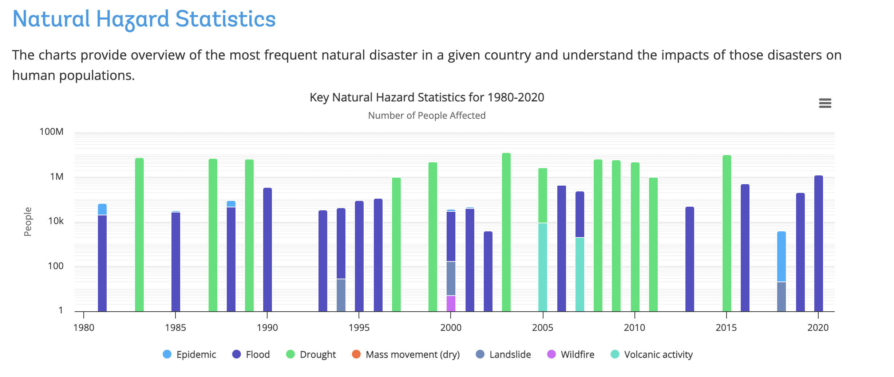

Chloropleth Map
Number of people whose life were affected by natural disasters
Description of the Assignment
This assignment consisted of using data from the Open source Sustainable Developement Goal (SDG) data to create a choropleth map. I chose to work on indicator 13.1.1, which represents the number of people whose livelihoods were disrupted or destroyed due to disasters (number). I focused on the years 2010 and 2020 to compare this indicator 10 years apart.
I selected this SDG indicator because it is part of the climate action rubric of the UN Goals. I was intrigued by the countries impacted by natural disasters and was especially curious to see how this evolved over 10 years. I expected more disasters in the future considering the impact of global warming and the increase in intensive natural disasters.
Metadata
Download PDFGoal 13:
Take urgent action to combat climate change and its impacts.
Target 13.1:
Strengthen resilience and adaptive capacity to climate-related hazards and natural disasters in all countries.
Indicator 13.1.1:
Number of deaths, missing persons, and directly affected persons attributed to disasters per 100,000 population.
Choropleth Map
A choropleth map is a type of thematic map where areas are colored in proportion to the measurements. The coloring represents different values of the variable, allowing for a visual comparison across geographic regions. These maps are commonly used to represent data such as population density, income levels, or rates of a particular phenomenon across different regions.
The strengths of a choropleth map are that it is easy to interpret and compare. It is very visual and doesn’t require experience in reading maps to understand the core message.
However, this type of representation has some weaknesses. It can lead to misimpressions if the size of the geographic regions varies significantly, as larger areas might appear more significant regardless of their actual data value, for instance. Lastly, if the data values are not evenly distributed, using equal intervals for shading can result in a map where most regions appear the same color, obscuring important differences.
Steps Taken to Create the Map
To create the map, I used the global boundary file from Natural Earth to have the shape of the countries, as the UN does not provide a shapefile of country boundaries. I joined these data with the data of Indicator 13.1.1 from the UN STAT DATA HUB. I chose a graduated symbology to emphasize the difference in impact in each country, ranging from yellow to red, with grey indicating the absence of data.
Observations
We can observe on the map that in 2010, Ethiopia, Sudan, Niger and Columbia were significantly affected by disasters. It is evident that the situation was more severe in 2010 compared to 2020. Further explanation can be found on the Climate Change Knowledge Portal. According to the portal, in 2010, Ethiopia experienced severe droughts that resulted in widespread famine across the country.  On the otherside of the Atlantic sea, Columbia faced in 2010 severe floods that impacted more than 2.4 millioins of people (Pan American Health Organization). This intense rainy season in Colombia is considerd to be the most devastating weather event in over 40 years.
Those two extreme climatic variations can be explained the phenomenon la Niña.
It is a climate pattern characterized by cooler-than-average sea surface temperatures in the central and eastern tropical Pacific Ocean, leading to significant weather changes globally.
In Africa, La Niña often brings increased rainfall to eastern regions, leading to flooding, and drought conditions to southern regions like ethiopia, impacting agriculture and water resources.
In South America, La Niña typically causes heavy rains and flooding in northern parts like Colombia and the Amazon basin, while causing drier conditions in southern areas such as Argentina and Chile.